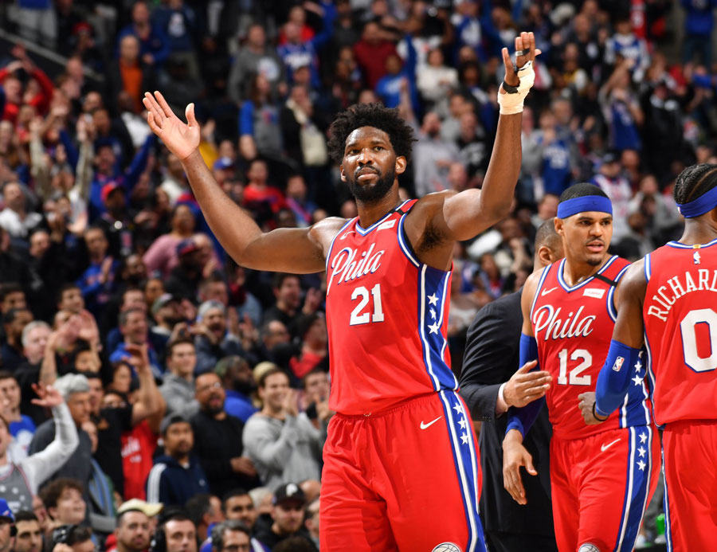

新しいニュースが届きました。
11/14 2022
カテゴリー:選手の活躍
ジョエル・エンビードが59得点をマークし、キャリアハイ達成!
11月14日、フィラデルフィア・76ersのジョエル・エンビードが、この日行なわれたユタ・ジャズ戦でキャリアハイとなる59点をマークした。エンビードは37分プレイして、フィールドゴールを19/28、フリースローを20/24で沈めた上、11リバウンド、8アシスト、7ブロックとオールラウンドに活躍した。試合も105-98でシクサーズが勝利している。特に第4クォーターは圧巻だった。チームが上げた27点のうち26点を1人で記録。さらに、ブロックもこのクォーターだけで5本を叩き出している。それでもエンビードは、試合後に自分だけの手柄ではないことを強調した。
エンビードは「この結果は、チームのみんなのおかげだ。みんなが今日は自分が調子がいいということに気づいて多くボールを集めてくれた。その結果に応えられたことは嬉しく思う。」と述べた。彼は去年MVPレースでニコラ・ヨキッチと争い、最終的に2位となり悔しい思いをした。今季はそれを糧にさらに活躍を続けると予想される。